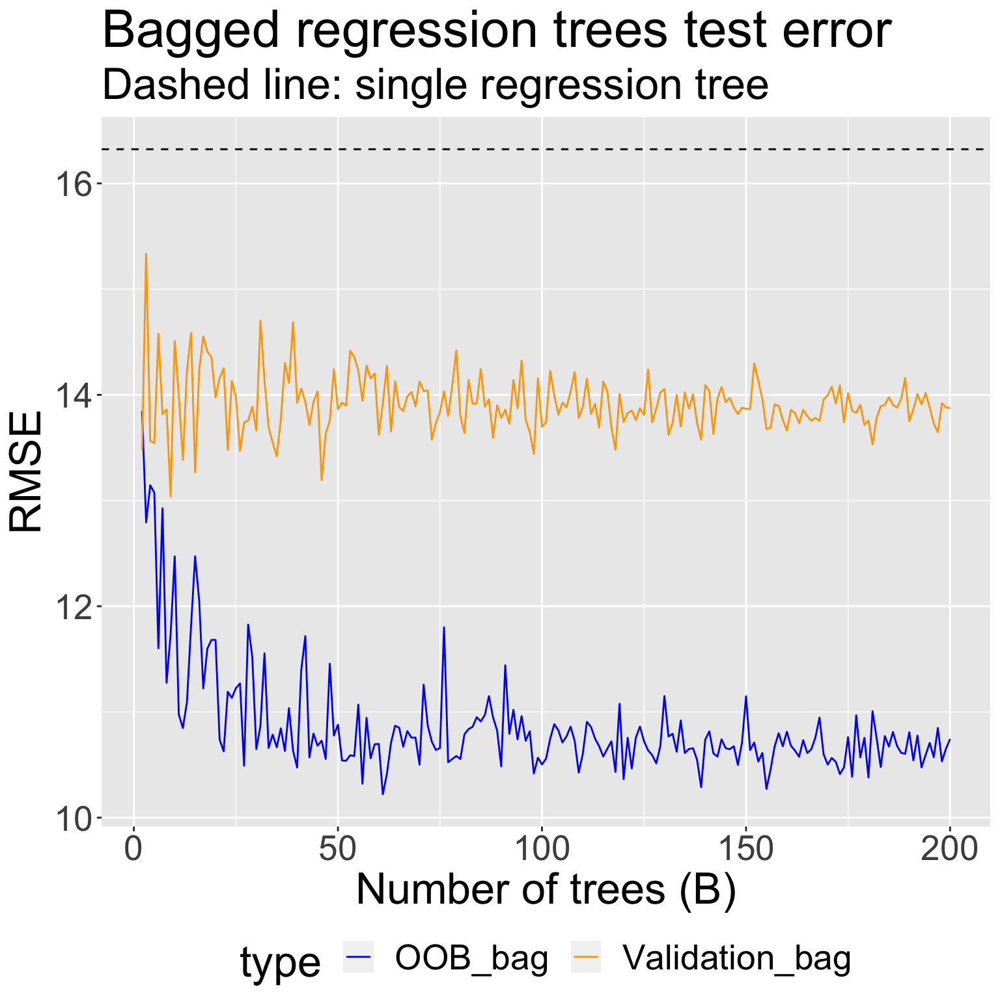
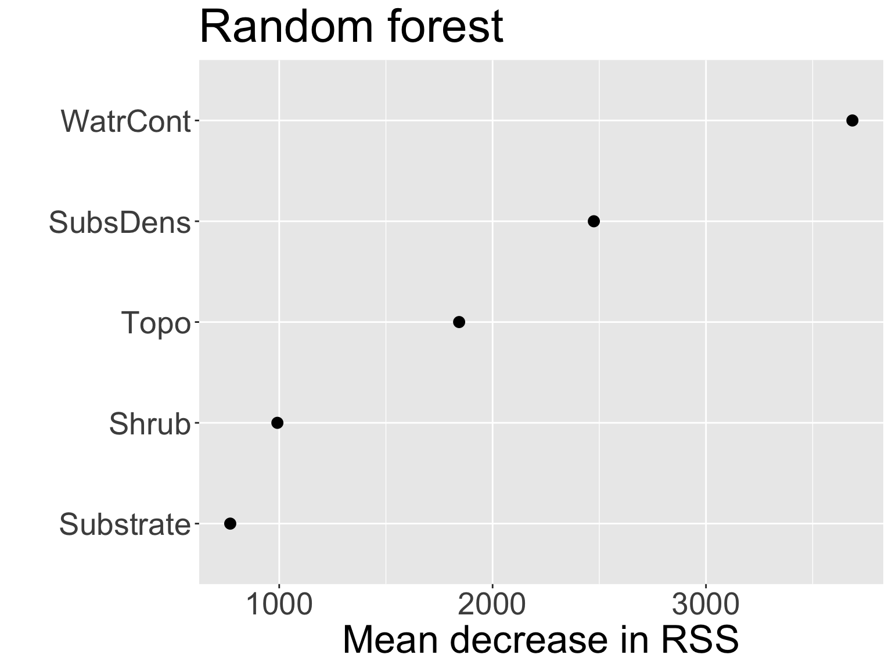

3/30/23
3/30: Lab 04 due midnight tonight! Unfortunately, Doug cannot have office hours tonight.
Sign-up for oral midterm component
Recall the disadvantages of decision trees
Lower levels of predictive accuracy compared to some other approaches
Can be non-robust (small changes in training data can result in a drastically different tree)
We will now see that aggregating many trees can improve predictive performance!
The decision trees described previously suffer from high variance, whereas linear regression tends to have low variance (when \(n >> p\))
An ensemble method is a method that combines many simple “building block” models in order to obtain a single final model
Bootstrap aggregation or bagging is a general-purpose procedure for reducing the variance of a statistical-learning method
However, we typically don’t have access to multiple training sets
Instead, we can bootstrap by taking repeated samples from a single training set
Bagging:
\[\hat{f}_{\text{bag}}(x) = \frac{1}{B} \sum_{b=1}^{B} \hat{f}^{(b)}(x)\]
To apply bagging to regression trees:
Construct \(B\) regression trees using \(B\) different bootstrapped training sets.
From each tree \(\hat{f}^{(b)}(x)\), we can obtain a prediction for a test observation \(x_{0}\): \(\hat{y}_{0}^{(b)}\)
Average the predictions to produce a final single prediction: \(\hat{y}_{0} = \frac{1}{B} \sum_{b=1}^{B}\hat{y}_{0}^{(b)}\)
Details
Each of the \(B\) trees are grown deep, and are not pruned. Why?
The only parameter we set when bagging decision trees is the number of trees \(B\) to include
Suppose we want to fit a bagged regression tree model to predict abundance in the mite data
Fit data on 80% train, predict on 20% test
Discuss: how would you fit a bagged regression tree model to obtain predictions for the test set using functions/methods you already know?
Estimating test error of a bagged model is quite easy without performing CV
On average, each one of the \(B\) trees is fit using about 2/3 of the observations. Remaining 1/3 are called out-of-bag (OOB) observations
Can predict the response for \(i\)-th observation using each of the trees in which that observation was OOB
Discuss: Why is the resulting OOB error a valid estimate of the test error for the bagged model?
When \(B\) sufficiently large, OOB error is virtually equivalent to LOOCV
Discuss and implement: how would you fit a bagged regression tree model where you use OOB observations to estimate test error?
Fitting bagged decision trees using the randomForest package
I fit bagged regression trees for \(B = 2, 3, \ldots, 200\) bootstrapped sets using
All the data, and obtained an estimate of test RMSE using the OOB samples
A training set of 2/3 of the original observations, and obtained an estimate of the test RMSE using the held-out validation set

Bagging can result in difficulty in interpretation: it’s no longer clear which predictors are most important to the procedure
But one main attraction of decision trees is their interpretability!
Can obtain an overall summary of importance of each predictor using the residual error:
WatrCont is the most important variable. This should make sense!
Live code!
Random forests provide improvement over bagged trees by providing a small tweak that decorrelates the trees
Like bagging, we build \(B\) decision trees using \(B\) different bootstrapped training samples
The only difference is in how each tree \(\hat{f}^{(b)}(x)\) is constructed
Prediction in random forests proceeds the same as in bagged trees
Each time a split is considered, a random sample of \(m\) predictors is chosen as split candidates from the full set of \(p\) predictors.
The node will split on one of these \(m\) predictors
At every split, we choose a new sample of \(m\) predictors
Typically choose \(m \approx p/3\)
For the mite data, we have \(p = 5\) predictors:
[1] "SubsDens" "WatrCont" "Substrate" "Shrub" "Topo" "abundance"Suppose we fit a random forest using \(B\) regression trees fit on \(B\) different bootstrapped sets.
For each regression tree, we first obtain a bootstrap sample of the original data
Then we build a regression tree where:
For node 1, we only consider a random sample of \(m \approx 5/3 \approx 2\) predictors:
[1] "SubsDens" "Shrub" For node 2, we consider a different random sample of \(m = 2\) predictors:
[1] "SubsDens" "WatrCont"Etc.
At each split, algorithm is not allowed to consider a majority of the available predictors
Bagged trees may be highly correlated, and averaging correlated quantities does not reduce variance as much as average uncorrelated
Discuss: what is the resulting model when \(m = p\)?
Live code!
For \(B = 2, 3, \ldots, 200\) tree, I fit a random forest with \(m = 2\) candidate predictors at each split using
All the data, and obtained an estimate of test RMSE using the OOB samples
A training set of 2/3 of the original observations (the same as in bagging), and obtained an estimate of the test RMSE using the held-out validation set
WatrCont is still the most important variableComparing estimated test error when fitting bagged regression trees vs random forests to mite data:
Comparing variable importance from the two models:

Shrub and SubstrateBagging and random forests are methods for improving predictive accuracy of regression trees
Considered “ensemble” methods
Random forests (and another method called boosting) are among state-of-the-art for supervised learning, but are less interpretable